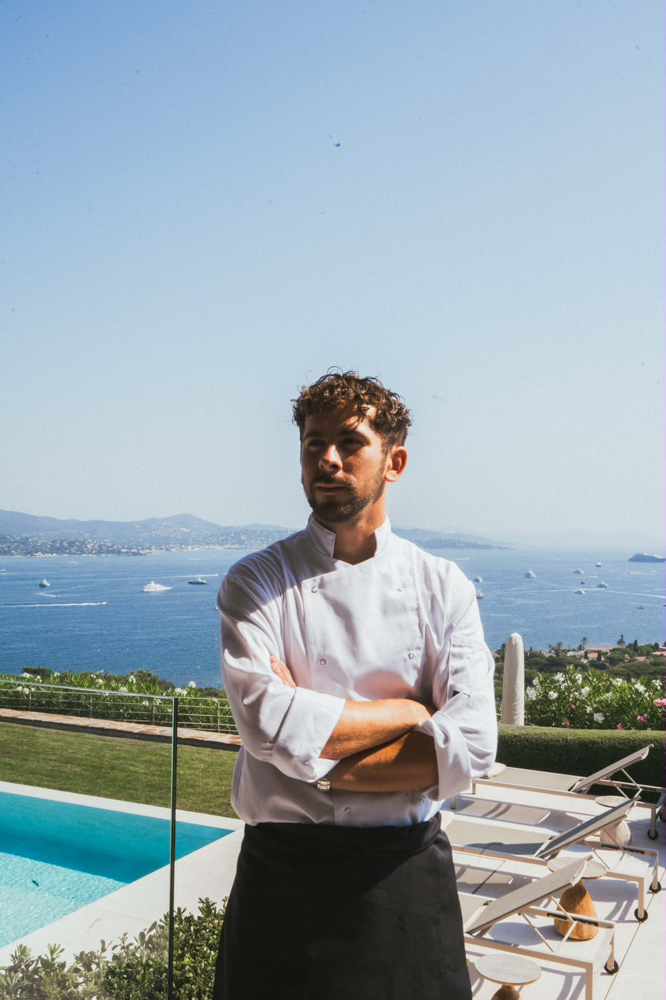
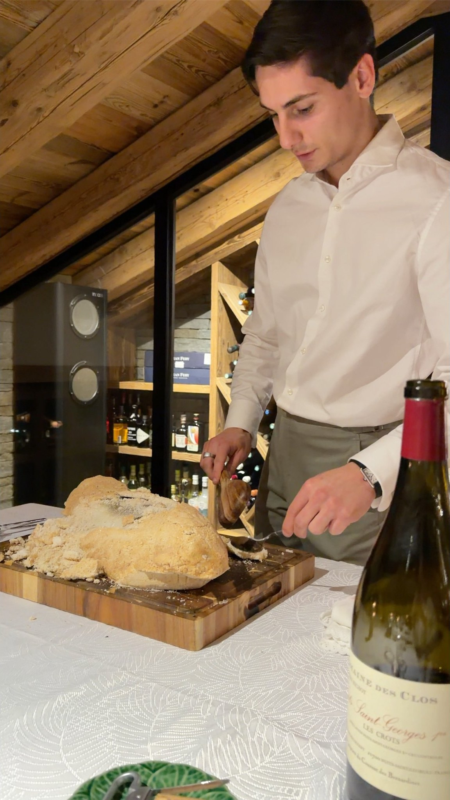

Le Duo
Deux parcours en grande maison, réunis au service d'un chalet privé.


« L'expérience des grands restaurants au service d'un chalet privé. »
Un duo qui orchestre chaque soirée : cuisine gastronomique à votre goût, service en salle sans faille, vins et cocktails adaptés à vos envies. Gastronomie à l'assiette ou service family style, aucun détail n'est laissé au hasard.